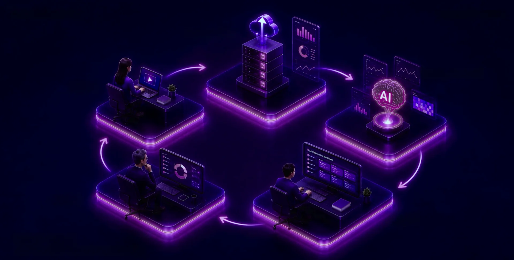
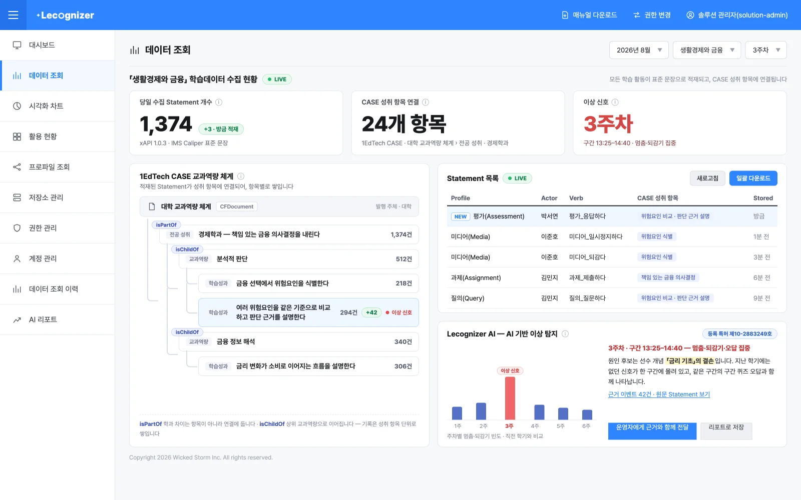
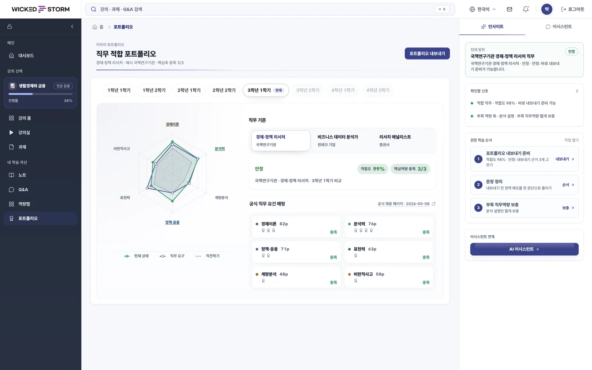
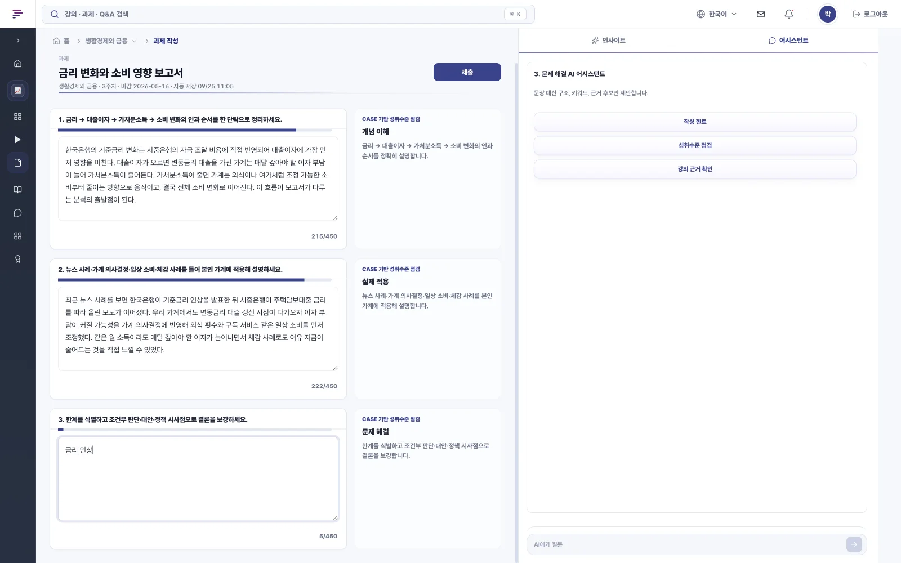
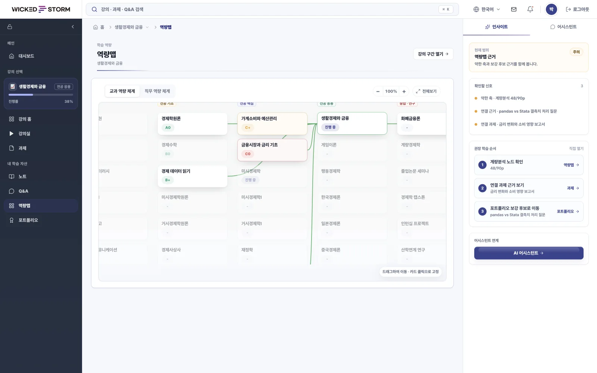
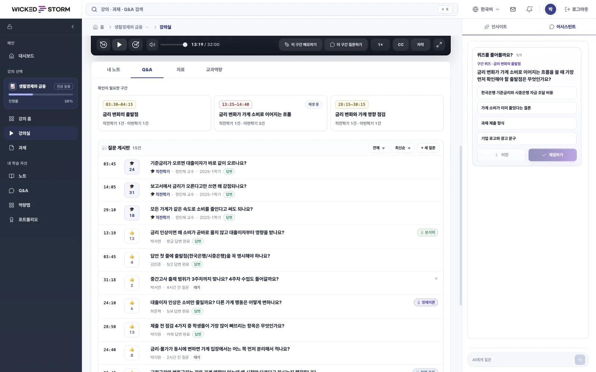
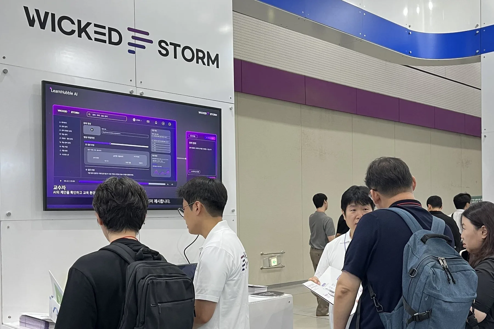
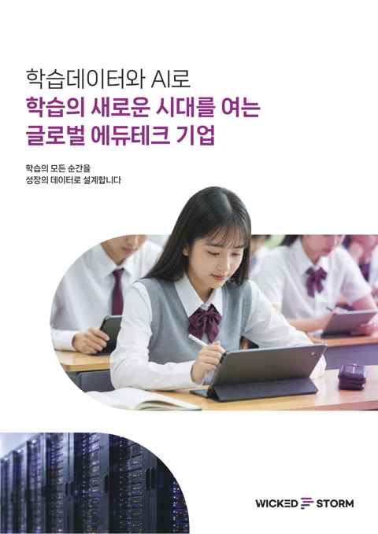
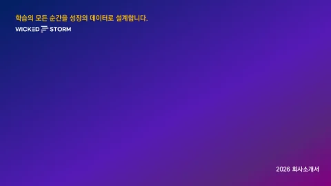

교육부 · 국가 수준
AI 디지털교과서
학습데이터 허브 구축
AI 디지털교과서의 학습데이터를 국제 표준으로 수집하는 허브를 구축해, 국가 수준 학습분석 지표·교육과정 표준체계·학습맵을 지원했습니다.
 Pipeline
Pipeline
학습데이터는 처음부터 국제 표준으로 들어와, 수집된 그대로 쌓이고 분석됩니다.
국제 표준으로 실시간 수집
교수·학습·운영의 모든 활동에서 생기는 학습데이터를 같은 기준으로 모읍니다.
교육과정 맥락과 함께 축적
학습 활동이 어느 교육과정 항목에서 일어났는지 맥락까지 함께 쌓습니다.
평소와 다른 신호를 찾아 알림
쌓인 학습데이터에서 많은 학습자가 어려워한 구간을 우선순위로 알립니다.
사람이 판단하고 실행
알림과 원본 데이터를 보고 사람이 판단하고, 그 결과가 다시 학습데이터로 쌓입니다.
 Product · Learning Loop
Product · Learning Loop
Lecognizer가 학습데이터를 쌓고 신호를 찾으면, LearnHubble AI가 그 신호를 운영자·교수자·학습자의 판단과 행동으로 잇습니다.

Learning Data Repository
AI 기반 이상 탐지를 갖춘 국제 표준 학습데이터 저장소입니다. 교수·학습·운영의 모든 활동에서 생기는 학습데이터를 실시간으로 수집·저장하고, 1EdTech CASE 교육과정 맥락과 함께 쌓습니다.

Lecognizer AI
Lecognizer에 쌓인 학습데이터를 분석하는 AI 솔루션입니다. 평소와 다른 신호와 많은 학습자가 어려워한 구간을 찾아 알리고, 그 근거가 된 원본 데이터까지 이어서 보여 줍니다.

※ 화면 속 교과·인물·수치는 제품 설명을 위한 시연용 데이터입니다.
 Learning Experience Platform
Learning Experience Platform
LearnHubble AI
학습자가 강의와 과제를 하는 동안, 도움이 필요한 순간 AI가 설명과 힌트를 건넵니다.
답은 학습자가 직접 쓰고, 개입과 적용은 교수자가 확인합니다.




※ 학습자 화면 예시입니다. 화면 속 강의·인물·수치는 시연용 데이터입니다.
 References
References
국가 단위 학습데이터 수집·분석 경험으로 공공기관과 교육기관의 데이터 기반 혁신을 함께 만들어 왔습니다.
교육부 · 국가 수준
AI 디지털교과서의 학습데이터를 국제 표준으로 수집하는 허브를 구축해, 국가 수준 학습분석 지표·교육과정 표준체계·학습맵을 지원했습니다.
KERIS · 똑똑! 수학탐험대
게이미피케이션 기반 수업 지원시스템에서 학습 행동 데이터를 수집하고 수준 진단·문항 추천 모델을 적용했습니다. 누적 사용자 240만 명이 이용한 대국민 서비스입니다.
인사혁신처 · 인재개발
인재개발플랫폼의 소셜 커뮤니티와 실시간 대규모 화상 세미나에서 일어나는 소셜러닝 경험을 학습데이터로 구체화해 수집했습니다.
서울시 · 교육플랫폼
서울형 교육플랫폼의 화상 멘토링에서 멘토와 멘티의 상호작용, 감정 상태와 발화를 학습데이터로 수집해 깊이 있는 학습 분석을 지원합니다.
 Standards Leadership
Standards Leadership
위키드스톰은 국제 교육기술 표준 컨소시엄 1EdTech의 한국 조직인 (사)1EdTech Korea 설립 이사회로 참여하며, 1EdTech Contributing Member로 활동합니다. xAPI·Caliper와 1EdTech CASE를 제품과 사업에 적용해 왔습니다.
 1EdTech Korea 설립 이사회 · Contributing Member
1EdTech Korea 설립 이사회 · Contributing Member
 Feed · Update
Feed · Update



현장 이야기는 채널에서 먼저 전합니다
행사 현장, 제품 화면, 표준·기술 노트를 인스타그램과 블로그에 올립니다. 자세한 기사는 이 홈페이지 소식에 남깁니다.
 Resources
Resources
박람회에서 나눠 드린 카탈로그와 회사소개서를 PDF로 받아 보실 수 있습니다.


 Company · Vision
Company · Vision
모든 학습 경험을 국제표준 데이터로 연결해, 더 나은 교육과 성장의 근거를 만듭니다.
Slogan학습의 모든 순간을 성장의 데이터로 설계합니다.
 History
History
 Contact
Contact
Lecognizer 도입, LearnHubble AI 시연, 학습데이터 설계 컨설팅과 제휴 상담까지 기관 환경에 맞춰 안내드립니다.
서울시 강서구 마곡중앙로 161-8, A동 901~905호
접수 내용을 확인한 뒤 입력한 이메일로 회신합니다.